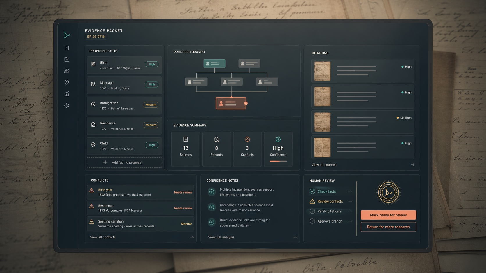

Record trail search
Follow a weak link through source images, indexes, households, locations, and variant names instead of treating each search as a disconnected prompt.
Product
ProofBranch is being designed for family-history platforms that want agentic research speed without turning the family tree into an unchecked prediction surface.
Request early accessCore loop
Follow a weak link through source images, indexes, households, locations, and variant names instead of treating each search as a disconnected prompt.
Compare chronology, relationships, places, and conflicts before a possible fact or branch update is surfaced.
Return structured suggestions that can be inspected as source- backed changes, not a paragraph that has to be reverse-engineered.
Keep approval, wording, rejection, and final write-back decisions in the hands of the researcher or platform workflow.

Integration surfaces
Prioritize suggested changes that need a researcher decision.
Bundle sources, extracted facts, conflicts, and reasoning.
Show what would change before anything touches the live tree.
Make every proposed update traceable to the records behind it.
Partner conversations
ProofBranch is prelaunch and looking for early partner conversations.
Request early access